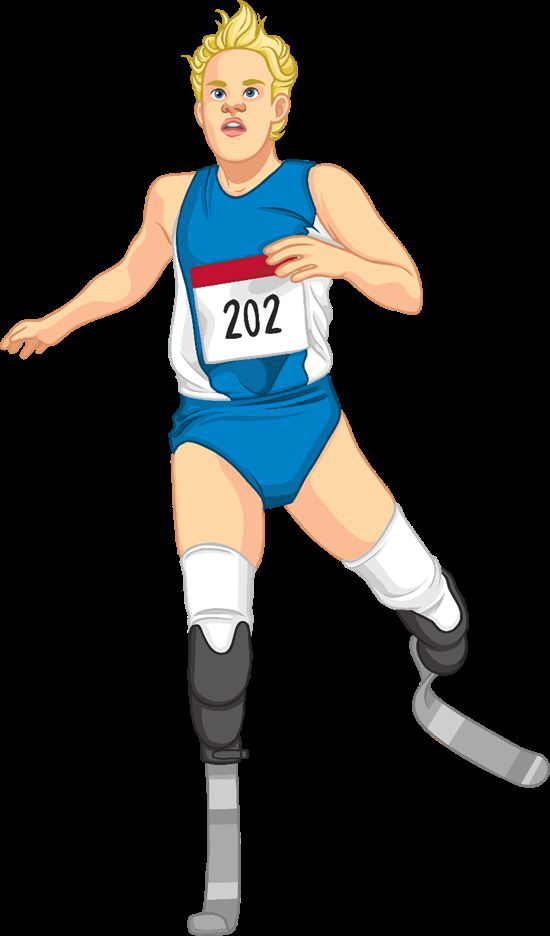

1. 호흡기관의 구조
Respiratory system공기가 지나가는 길
Cognito공기는 입/코 → 기관(trachea) → 기관지(bronchi) → 세기관지(bronchioles) → 폐포(alveoli) 순서로 폐 깊숙이 들어간다. 기관에는 연골 고리(cartilage)가 있어 항상 열려 있다.
주요 기관과 기능
Trachea(기관): 공기 통로, 연골로 항상 열림.
Bronchus(기관지): 좌/우 폐로 갈라짐.
Bronchioles(세기관지): 폐 안에서 더 작게 가지치기.
Alveoli(폐포): 작은 공기 주머니, 기체 교환.
Intercostal muscles(늑간근)·Diaphragm(횡격막): 호흡 운동을 일으키는 근육.
Bronchus(기관지): 좌/우 폐로 갈라짐.
Bronchioles(세기관지): 폐 안에서 더 작게 가지치기.
Alveoli(폐포): 작은 공기 주머니, 기체 교환.
Intercostal muscles(늑간근)·Diaphragm(횡격막): 호흡 운동을 일으키는 근육.

좌폐가 더 작은 이유
사람은 폐가 두 개이지만 왼쪽 폐가 오른쪽보다 작다. 왼쪽에는 심장이 자리 잡을 공간이 필요하기 때문이다.

기관 안의 미세 조직
기관 벽에는 두 종류의 세포가 있다.
• Goblet cells(술잔세포) → 점액(mucus) 분비, 먼지·세균 잡음.
• Ciliated cells(섬모세포) → 섬모를 움직여 점액을 입쪽으로 밀어냄. 그래서 삼키거나 기침으로 배출.
• Goblet cells(술잔세포) → 점액(mucus) 분비, 먼지·세균 잡음.
• Ciliated cells(섬모세포) → 섬모를 움직여 점액을 입쪽으로 밀어냄. 그래서 삼키거나 기침으로 배출.

2. 호흡 운동 (Breathing)
B1.3 Breathing / VentilationBreathing ≠ Respiration
CognitoBreathing(호흡 운동)은 공기를 폐로 넣었다 빼는 물리적 움직임.
Respiration(세포 호흡)은 세포 안에서 포도당으로 에너지를 만드는 화학 반응. 둘은 완전히 다른 것!
Respiration(세포 호흡)은 세포 안에서 포도당으로 에너지를 만드는 화학 반응. 둘은 완전히 다른 것!
들숨 (Inhalation)
1) 늑간근 수축 → 흉곽이 위·바깥으로 움직임.
2) 횡격막 수축 → 평평해짐(아래로).
3) 흉강 부피 ↑ → 압력 ↓.
4) 공기가 기관을 따라 폐로 빨려 들어옴.
2) 횡격막 수축 → 평평해짐(아래로).
3) 흉강 부피 ↑ → 압력 ↓.
4) 공기가 기관을 따라 폐로 빨려 들어옴.

날숨 (Exhalation)
1) 늑간근 이완 → 흉곽이 아래·안쪽으로 움직임.
2) 횡격막 이완 → 다시 돔 모양으로 위로 올라감.
3) 흉강 부피 ↓ → 압력 ↑.
4) 공기가 폐 밖으로 밀려 나감.
2) 횡격막 이완 → 다시 돔 모양으로 위로 올라감.
3) 흉강 부피 ↓ → 압력 ↑.
4) 공기가 폐 밖으로 밀려 나감.
폐활량 (Vital capacity)
한 번에 최대로 들이쉬고 내쉴 수 있는 공기의 양. 나이·성별·운동량에 따라 다르다. 측정 장치는 Spirometer(폐활량계). 간단하게는 물병+눈금실린더로도 측정 가능.

벨자(Bell jar) 풍선 모델
유리 종, 풍선, 고무막으로 폐 호흡을 흉내내는 모델.
• 고무막 = 횡격막
• 풍선 = 폐
• 유리 종 = 흉곽
한계: 늑골이 움직이지 않고, 폐포·세기관지 같은 세부 구조가 없다.
• 고무막 = 횡격막
• 풍선 = 폐
• 유리 종 = 흉곽
한계: 늑골이 움직이지 않고, 폐포·세기관지 같은 세부 구조가 없다.

3. 기체 교환 (Gas exchange)
1.2 Gas exchange들숨 vs 날숨의 조성
FreeSci들숨: O₂ 21%, CO₂ 0.04%, N₂ 78.1%, 수증기 0.96%.
날숨: O₂ 16%(감소), CO₂ 4.0%(증가), 수증기 3%(증가). 질소는 변화 없음. 세포 호흡 때문에 O₂가 줄고 CO₂가 늘어남.
날숨: O₂ 16%(감소), CO₂ 4.0%(증가), 수증기 3%(증가). 질소는 변화 없음. 세포 호흡 때문에 O₂가 줄고 CO₂가 늘어남.

폐포의 적응 (Alveoli adaptations)
폐포가 기체 교환을 잘 하는 4가지 이유:
1) 얇은 벽 (세포 한 층) → 확산 거리 짧음
2) 넓은 표면적 (약 6억 개, 테니스 코트 넓이)
3) 모세혈관이 많음 → 혈액이 가까이
4) 촉촉한 표면 → 기체가 잘 녹아 확산
1) 얇은 벽 (세포 한 층) → 확산 거리 짧음
2) 넓은 표면적 (약 6억 개, 테니스 코트 넓이)
3) 모세혈관이 많음 → 혈액이 가까이
4) 촉촉한 표면 → 기체가 잘 녹아 확산

기체 교환 한 줄 정리
오 산소는 폐포→혈액으로 확산해 적혈구의 헤모글로빈과 결합한다. 이산화탄소는 혈액→폐포로 확산해 날숨으로 배출된다.

4. 유산소 호흡 (Aerobic respiration)
1.4 Aerobic respiration정의와 식
Cognito산소를 이용해 포도당을 분해, 많은 에너지를 만드는 화학 반응.
Glucose + Oxygen → Carbon dioxide + Water + Energy
(포도당 + 산소 → 이산화탄소 + 물 + 에너지)
화학식 포도당: C₆H₁₂O₆
Glucose + Oxygen → Carbon dioxide + Water + Energy
(포도당 + 산소 → 이산화탄소 + 물 + 에너지)
화학식 포도당: C₆H₁₂O₆

Breathing과의 관계
호흡 운동(breathing)은 세포 호흡에 필요한 O₂를 들여오고, 폐기물 CO₂를 내보내는 일을 한다. 즉 breathing이 respiration을 위한 공급 시스템.
CO₂ 검출 (Limewater)
석회수(Limewater)에 이산화탄소를 통과시키면 투명 → 우유빛 흐림으로 변한다. 사람이 숨을 내쉬면 석회수가 흐려지는 실험으로 호흡으로 CO₂가 나옴을 증명할 수 있다.

5. 무산소 호흡 (Anaerobic respiration)
1.4 Anaerobic respiration정의와 식
산소 없이 포도당을 분해해 에너지를 얻는 호흡. 에너지는 유산소 호흡보다 훨씬 적게 나온다.
Glucose → Lactic acid + Energy
(포도당 → 젖산 + 에너지)
Glucose → Lactic acid + Energy
(포도당 → 젖산 + 에너지)
언제 일어날까?
100m 전력 질주처럼 짧고 격렬한 운동을 할 때, 산소 공급이 빨리 따라오지 못해서 무산소 호흡이 일어난다. 결과로 근육에 젖산(lactic acid)이 쌓인다.

산소 빚 (Oxygen debt)
운동 후 쌓인 젖산을 분해하려면 추가의 산소가 필요하다. 그래서 운동을 멈춰도 한동안 거친 숨이 계속된다 — 이게 'oxygen debt(산소 빚)'을 갚는 과정.
유산소 vs 무산소 비교
| Aerobic | Anaerobic | |
|---|---|---|
| 산소 | 필요 | 불필요 |
| 포도당 분해 | 완전 | 불완전 |
| 산물 | CO₂ + 물 | 젖산 |
| 에너지 | 많이 | 적게 |
6. 혈액 (Blood)
1.5 Blood혈액의 4가지 성분
CognitoPlasma(혈장): 노란 액체. 세포·당·CO₂·노폐물 운반.
Red blood cells(적혈구): 산소 운반.
White blood cells(백혈구): 병원체 방어.
Platelets(혈소판): 상처 부위에 딱지(scab) 형성.
Red blood cells(적혈구): 산소 운반.
White blood cells(백혈구): 병원체 방어.
Platelets(혈소판): 상처 부위에 딱지(scab) 형성.

적혈구 (Red blood cell)
• 양쪽이 오목한 biconcave(원반) 모양 → 표면적 ↑
• 핵 없음 → 산소 더 많이 실음
• 골수(bone marrow)에서 생성
• 안에 헤모글로빈(haemoglobin)이라는 빨간 단백질이 있어 산소와 결합.
• 핵 없음 → 산소 더 많이 실음
• 골수(bone marrow)에서 생성
• 안에 헤모글로빈(haemoglobin)이라는 빨간 단백질이 있어 산소와 결합.

백혈구 (White blood cell)
Cognito면역 시스템의 일부. 두 종류:
• Phagocytes(식세포): 병원체를 둘러싸고(engulf) 삼켜(destroy) 분해 — 이 과정을 phagocytosis(식작용)이라 부름.
• Lymphocytes(림프구): 항체(antibodies)를 만들어 병원체를 뭉치게 해 식세포가 잡기 쉽게 함.
• Phagocytes(식세포): 병원체를 둘러싸고(engulf) 삼켜(destroy) 분해 — 이 과정을 phagocytosis(식작용)이라 부름.
• Lymphocytes(림프구): 항체(antibodies)를 만들어 병원체를 뭉치게 해 식세포가 잡기 쉽게 함.

헤모글로빈 작동 방식
폐에서 산소 농도가 높음 → 헤모글로빈이 산소와 결합해 옥시헤모글로빈. 세포 근처에서 산소 농도가 낮음 → 반대 반응으로 산소를 풀어줌. 이렇게 산소를 필요한 곳까지 옮긴다.